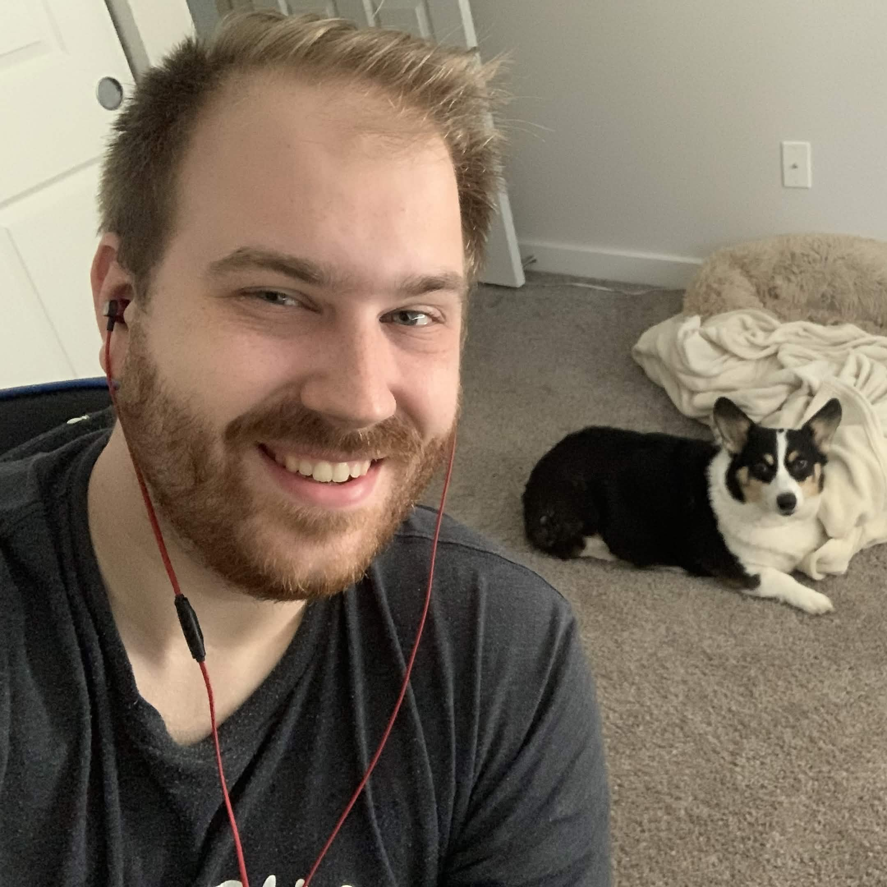

Hi there! I'm Caleb Hawkins, also known by my online alias Muddy. I'm a programmer with years of experience in Python, as well as dabbling in Ruby, Java, C++, C#, and other languages as well. I enjoy creating stuff, and writing about anything from video games, to movies, to just all-around new experiences that I feel motivated to talk about.
For that reason, I've developed this little website to share my thoughts on whatever hyperfixations I might have.

Me and my buddy, Banjo.
I've been programming for most of my life now, starting early on with Adobe Actionscript, back when that was a thing. I created games and some short animations, all of which were terrible, but it confirmed to me that I like making things, especially when others could get some kind of value out of it, either for entertainment or utility.
Later on I attended the University of Washington in Bothell and studied Computer Science, earning my Bachelor's and moving on to work at Fulcrum Technologies and later MCG Health in Seattle, where I found success in creating automated processes such as Autodocs (an automated documentation and cataloging system for cloud servers which helped to ease the process of software development and testing) and Authbot (an automated system for granting and logging limited-time access to select databases for pre-approved users).
OK, on to more interesting, non-work related stuff; I'm a big fan of games as an art form, and I find almost as much joy in writing about them as I do playing them, though I can't confirm yet if others enjoy reading my stuff...you be the judge, I suppose?
I'm also a musician with years of experience playing ukulele and guitar, and about 30 minutes of experience with the otomatone, which puts me in the top 50% of otomatone musicians, probably. I haven't confirmed. I might record some things and put them on this site when I do, but don't expect me to sing - I'm not that mean.
I also love putting together Lego, though at the time being I have essentially no MOCs to show off - maybe that will change soon? Again, if it does, it's going here.
I'll update this blurb as I add more things to this site.